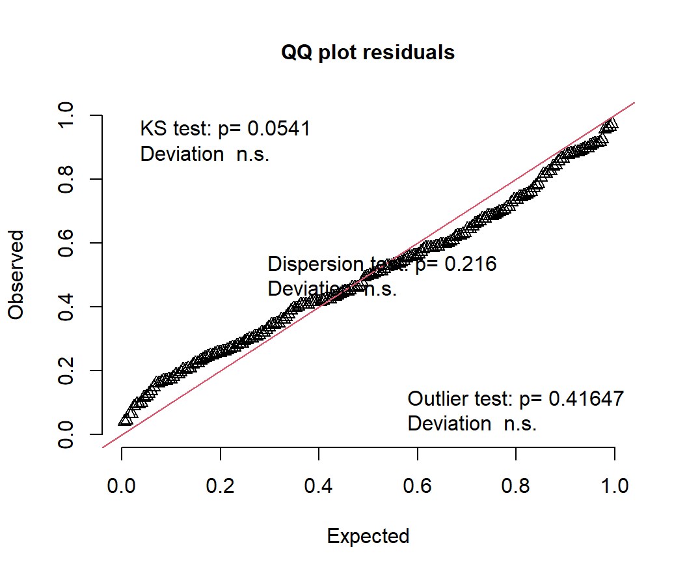
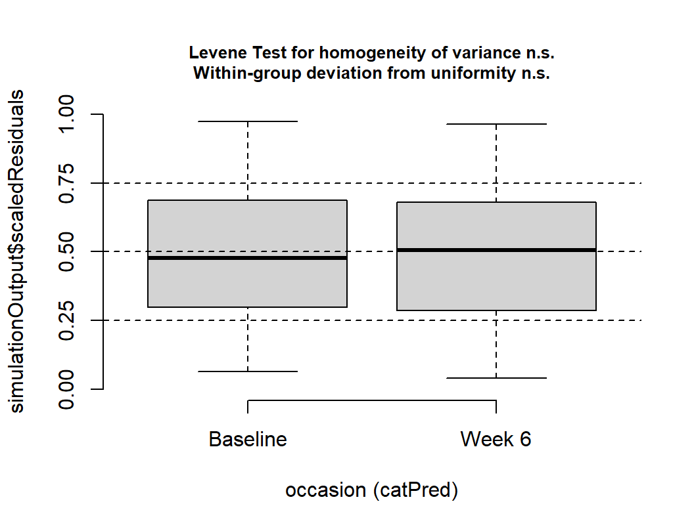

set.seed(343)
n <- 48
# Each student has a personal tendency to stare that follows them into BOTH
# conditions. That shared tendency is the entire reason pairing works.
participant_effect <- rnorm(n, mean = 0, sd = 1.20)
paired_wide <- data.frame(
participant = factor(seq_len(n)),
no_chocolate = 5.00 + participant_effect + rnorm(n, 0, 0.80),
chocolate = 5.75 + participant_effect + rnorm(n, 0, 0.80)
)
paired_wide$difference <-
paired_wide$chocolate - paired_wide$no_chocolate
# 48 rows become 96: one row per measurement instead of one row per person.
paired_long <- tidyr::pivot_longer(
paired_wide,
cols = c(no_chocolate, chocolate),
names_to = "condition",
values_to = "fixation"
)
paired_long$condition <- factor(
paired_long$condition,
levels = c("no_chocolate", "chocolate"),
labels = c("No chocolate", "Chocolate")
)18 Mixed Regression: Between People and Within People
18.1 Your Paired t-Test Was a Mixed Model All Along
The paired-samples t-test chapter gave 48 students one lecture with chocolate and one without, then measured how long their eyes stayed on the screen. Here is that study again, same seed and same 48 students, so this chapter runs from the top without sending you back a chapter to fetch the data.
There are two ways to analyze this. The first is the one you already know. Collapse each student down to a single difference score and ask whether those differences average to zero:
paired_result <- t.test(
paired_wide$chocolate,
paired_wide$no_chocolate,
paired = TRUE
)
paired_result
Paired t-test
data: paired_wide$chocolate and paired_wide$no_chocolate
t = 4.3366, df = 47, p-value = 7.597e-05
alternative hypothesis: true mean difference is not equal to 0
95 percent confidence interval:
0.4209697 1.1495099
sample estimates:
mean difference
0.7852398 The second way never computes a difference at all. It hands R all 96 measurements in long format, plus one piece of information the t-test was only ever told indirectly, through the row order: which measurements came from the same human.
library(lme4) # fits the mixed model
library(lmerTest) # adds degrees of freedom and p-values to the fixed effects
chocolate_model <- lmer(
fixation ~ condition + (1 | participant),
data = paired_long
)
summary(chocolate_model)Linear mixed model fit by REML. t-tests use Satterthwaite's method [
lmerModLmerTest]
Formula: fixation ~ condition + (1 | participant)
Data: paired_long
REML criterion at convergence: 297.6
Scaled residuals:
Min 1Q Median 3Q Max
-1.87123 -0.50482 -0.02554 0.43379 2.44023
Random effects:
Groups Name Variance Std.Dev.
participant (Intercept) 0.6453 0.8033
Residual 0.7869 0.8871
Number of obs: 96, groups: participant, 48
Fixed effects:
Estimate Std. Error df t value Pr(>|t|)
(Intercept) 4.7660 0.1727 78.1367 27.591 < 2e-16 ***
conditionChocolate 0.7852 0.1811 47.0000 4.337 7.6e-05 ***
---
Signif. codes: 0 '***' 0.001 '**' 0.01 '*' 0.05 '.' 0.1 ' ' 1
Correlation of Fixed Effects:
(Intr)
condtnChclt -0.524Find the conditionChocolate row in that output. Then look back at the t-test.
choc_fixed <- summary(chocolate_model)$coefficients
comparison <- data.frame(
method = c("paired t-test", "lmer"),
t = c(unname(paired_result$statistic),
choc_fixed["conditionChocolate", "t value"]),
df = c(unname(paired_result$parameter),
choc_fixed["conditionChocolate", "df"]),
p = c(paired_result$p.value,
choc_fixed["conditionChocolate", "Pr(>|t|)"]),
estimate = c(unname(paired_result$estimate),
choc_fixed["conditionChocolate", "Estimate"])
)
print(comparison, digits = 6, row.names = FALSE) method t df p estimate
paired t-test 4.33661 47 7.59724e-05 0.78524
lmer 4.33661 47 7.59724e-05 0.78524Those are not two answers that happen to agree. They are one answer, printed twice.
The degrees of freedom are worth a second look, because the two rows got to 47 by completely different routes. The t-test knows it has 48 differences and subtracts one. lmer has no idea what a difference score is; lmerTest works out how much independent information the 96 rows actually contain, using an approximation called Satterthwaite’s method, and arrives at 47 anyway.
18.1.1 What (1 | participant) Actually Did
That term is the whole difference between the two calls. It tells R that rows sharing a participant number came from the same person, and that people arrive at a study with their own resting level of staring. Some students watch the screen. Some students watch the door.
It handles this without estimating 48 separate student coefficients. It estimates the spread of the students, a single number, and treats each person’s own level as a draw from it:
print(VarCorr(chocolate_model), comp = c("Variance", "Std.Dev.")) Groups Name Variance Std.Dev.
participant (Intercept) 0.64532 0.80332
Residual 0.78689 0.88707 The participant line is how much students differ from each other. The Residual line is how much one student bounces around their own level from one measurement to the next. Those are the two piles the 96 numbers get sorted into, and we can ask what fraction of the variance sits in the first pile:
choc_var <- as.data.frame(VarCorr(chocolate_model))
icc <- choc_var$vcov[1] / sum(choc_var$vcov)
icc[1] 0.4505776So roughly 45 percent of the variation in fixation time is students being different students, before chocolate enters the discussion. The paired t-test dealt with that variation by subtracting it away and never mentioning it again. The mixed model estimates it and prints it.
That proportion is also the model’s answer to a question the paired t-test chapter asked directly: how much do a person’s two measurements agree? That chapter measured the agreement head-on, as a plain correlation of 0.46, and called it the \(r\) in the \(-2rS_1S_2\) term that everything depended on. The two numbers are close without being identical, because they are two different estimates of the same thing: one computed directly from the pairs, one implied by the variances the model fit. The point is that the quantity has stopped being a term in a formula and become a parameter with a variance attached.
“Each person is their own control” is a sentence from a methods lecture. (1 | participant) is that sentence written as an equation.
18.1.2 The Fixed Effect Is the Chocolate Effect
The fixed effects are the part of the model that answers the research question, and there are only two:
(Intercept), 4.77 seconds, is average fixation time with no chocolate.conditionChocolate, 0.79 seconds, is what chocolate adds on top of that.
The second one is not merely close to the t-test’s mean difference. It is the mean difference, 0.79 seconds, reached from the opposite direction: the t-test computed 48 differences and averaged them, while the model never computed a single difference and got there anyway.
Fixed effects answer the research question. Random effects are how the model earns the right to answer it using 96 rows that came from 48 people.
18.1.3 So What Was the Point of All That?
Nothing yet, honestly. With two measurements and no other predictors, the paired t-test is shorter to type and gives the same answer, so keep using it. The mixed model has not earned anything.
It earns its keep the moment the design acquires something a difference score cannot hold:
- A between-person predictor. Treatment group, age, baseline severity. Subtracting within a person throws the person away, and group is a property of the person.
- A missing row. A student who skipped a session has no difference score at all, so the t-test deletes the entire student.
- Three or more occasions. There stops being such a thing as the difference.
- People who change at different rates, not merely by different amounts. A difference score has nowhere to put a slope.
The rest of this chapter does the first two. The last two need a bigger model than this chapter builds, and they get their own chapter later in the book.
NoteWhere This Chapter Goes, and Where It Stops
Two stops, and you just finished the first. Next is the mixed 2-by-2: one within-subjects factor, one between-subjects factor, four cells, one interaction. That is the design most repeated-measures studies in psychology actually run, and it is where this chapter stops.
A mixed design combines a between-subjects variable with a within-subjects variable, which summons fixed effects, an interaction, repeated observations, and random effects all at once. It is not impossible. It is merely statistics arriving with all its relatives and expecting you to provide chairs.
18.2 The Mixed 2-by-2: Baseline versus Week 6, by Group
Suppose researchers compare cognitive behavioral therapy (CBT) with a control condition for reducing depression symptoms. Participants are randomly assigned to CBT or control and complete a depression inventory twice: at baseline and again after six weeks.
- Occasion is within subjects: every person appears at baseline and at Week 6.
- Group is between subjects: each person is in CBT or control, never both.
- Depression score is the quantitative outcome.
You have seen this shape before. The categorical-by-categorical interaction chapter had two categorical predictors and four cells. So does this:
| Control | CBT | |
|---|---|---|
| Baseline | \(\mu_{11}\): Control at baseline | \(\mu_{12}\): CBT at baseline |
| Week 6 | \(\mu_{21}\): Control at Week 6 | \(\mu_{22}\): CBT at Week 6 |
The research question is not whether the groups differ, and not whether scores change. It is whether they change differently:
\[B_3 = (\mu_{22}-\mu_{12})-(\mu_{21}-\mu_{11})\]
Find the change in CBT. Find the change in Control. Compare the two changes. That is the same difference of differences the earlier chapter spent itself on, and it has not changed jobs here.
18.2.1 What Stays the Same, and the One Thing That Changes
| Feature | The earlier categorical 2-by-2 | This mixed 2-by-2 |
|---|---|---|
| Categorical predictors | Two | Two |
| Cells | Four | Four |
| The interaction | Difference of differences | Difference of differences |
| Who fills the cells | Different people in every cell | The same person fills two of them |
| The model | lm(Y ~ A * B) |
the same, plus a participant random intercept |
The fixed part of the formula does not change at all. We add the random intercept because the two rows from one person are related, and pretending they came from strangers would count one human twice and let the model become confident in ways it has not earned.
18.2.2 The Data
This is simulated data. Real treatment studies require clinical expertise, ethical oversight, careful monitoring, informed consent, and substantially more planning than “Alex found rnorm().”
set.seed(3436)
n_per_group <- 50
people <- data.frame(
participant = factor(seq_len(2 * n_per_group)),
group = factor(
rep(c("Control", "CBT"), each = n_per_group),
levels = c("Control", "CBT")
),
# each person's own baseline level, and their own rate of change
person_intercept = rnorm(2 * n_per_group, 0, 5.0),
person_slope = rnorm(2 * n_per_group, 0, 0.45)
)
# every person gets a baseline row and a Week 6 row
mixed_data <- merge(people, data.frame(week = c(0, 6)), by = NULL)
mixed_data <- mixed_data[order(mixed_data$participant,
mixed_data$week), ]
mixed_data$depression <-
35 +
mixed_data$person_intercept +
(-0.20 * mixed_data$week) + # control drifts down slowly
ifelse(mixed_data$group == "CBT",
-1.20 * mixed_data$week, 0) + # CBT drops faster: the effect
mixed_data$person_slope * mixed_data$week +
rnorm(nrow(mixed_data), 0, 2.0)
# the same variable twice: week as a number, occasion as a readable label
mixed_data$occasion <- factor(
mixed_data$week,
levels = c(0, 6),
labels = c("Baseline", "Week 6")
)The data are long: one row per person per occasion, 200 rows from 100 people. The participant identifier repeats because the person repeats. If your participant column disappears, stop. Do not proceed directly to the ritual sacrifice.
Notice that the simulation gave every person their own person_slope, so the invented humans genuinely do improve at different rates, not merely by different amounts. Measured twice, nobody can tell the difference. The last section of this chapter is about designs where you would want to.
18.2.3 Look at the Four Cells First
aggregate(
depression ~ occasion + group,
data = mixed_data,
FUN = function(x) c(M = mean(x), SD = sd(x))
) occasion group depression.M depression.SD
1 Baseline Control 35.793859 5.832925
2 Week 6 Control 33.862191 6.672687
3 Baseline CBT 34.224262 5.804333
4 Week 6 CBT 26.540161 6.450846library(ggplot2)
group_means <- aggregate(
depression ~ occasion + group,
data = mixed_data,
FUN = mean
)
ggplot(
mixed_data,
aes(x = occasion, y = depression, group = participant, color = group)
) +
geom_line(alpha = 0.15) +
geom_line(
data = group_means,
aes(group = group), linewidth = 1.4
) +
geom_point(
data = group_means,
aes(group = group), size = 2.8
) +
labs(
x = NULL,
y = "Depression score",
color = "Group",
title = "Group averages sitting on top of actual humans"
) +
theme_minimal(base_size = 11)![A line plot with Occasion on the x axis, Baseline and Week 6, and depression score on the y axis running from about 10 to about 53. One hundred faint lines each connect one participant's two scores, colored salmon for Control and teal for CBT, and they slope in both directions. Two heavy lines with round markers connect the group means. Both groups start near 35. The Control mean falls slightly to about 34, while the CBT mean falls steeply to about 27, so the two heavy lines are clearly not parallel.](Ch_18_Mixed_Regression_files/figure-html/mixed-design-plot-1.png)
The two groups start at nearly the same place, which is what randomization is supposed to buy. By Week 6 the CBT mean has dropped much further. But people do not all begin at the same score or change by the same amount. Some improve a lot, some barely, and some appear to have received therapy from a motivational poster in a dentist’s office.
Never decide whether an effect is statistically significant by staring at whether confidence intervals overlap. CI overlap is not the direct test of a difference, and interaction tests are about differences between differences. Fit the model that asks the question.
18.3 Why Ordinary Regression Is Not Enough
We could hand those four cells to lm() and it would answer without complaint:
ordinary_model <- lm(depression ~ occasion * group, data = mixed_data)That model treats all 200 rows as independent. They are not. Two rows belong to each participant, and two scores from the same person know each other, which is the identity theft the paired t-test chapter warned about.
This structure is called nesting:
\[ \text{occasions nested within participants} \]
The levels are:
- Level 1: repeated occasions (\(j\));
- Level 2: participants (\(i\)).
Group belongs to Level 2 because it does not change within a person. Occasion belongs to Level 1 because it does.
We will come back to ordinary_model once the mixed model is fit, because the comparison is more interesting than the warning.
18.4 The Fixed Effects
The fixed part is ordinary regression on the four cells:
\[ Y_{ij}=b_0+b_1(\text{Week 6}_{ij})+b_2(\text{CBT}_i) +b_3(\text{Week 6}_{ij}\times\text{CBT}_i)+\text{random part}+e_{ij} \]
Because Baseline and Control are the reference levels, each coefficient is one step around the 2-by-2:
| Coefficient | What it estimates |
|---|---|
| \(b_0\) | Mean depression for Control at baseline |
| \(b_1\) | Week 6 minus baseline, within Control |
| \(b_2\) | CBT minus Control, at baseline |
| \(b_3\) | How much more CBT changed than Control |
The CBT change is \(b_1+b_3\). The interaction \(b_3\) is the treatment question, and if it is negative then CBT scores fell further than Control scores.
Notice why coding matters. A “main effect of Group” is not a universal average group difference here. It is the group difference at baseline, before anybody has been treated, which in a randomized trial we hope is nothing at all. Choosing baseline as the reference is what makes that coefficient answer a question worth asking instead of describing the difference during Week Zero Hundred and Twelve, a period known only to the Probability Gods.
18.5 The Random Intercept
The repeated observations require us to say how people differ. Each participant gets their own starting level:
\[ Y_{ij}=b_0+b_1\text{Week 6}_{ij}+b_2\text{CBT}_i +b_3(\text{Week 6}_{ij}\times\text{CBT}_i)+u_{0i}+e_{ij} \]
That \(u_{0i}\) is the same (1 | participant) that reproduced the paired t-test at the top of the chapter, doing the same job on a larger design: give participants different intercepts, by estimating the variance of those intercepts rather than 100 unrelated participant coefficients.
mixed_model <- lmer(
depression ~ occasion * group + (1 | participant),
data = mixed_data,
REML=TRUE
)
summary(mixed_model)Linear mixed model fit by REML. t-tests use Satterthwaite's method [
lmerModLmerTest]
Formula: depression ~ occasion * group + (1 | participant)
Data: mixed_data
REML criterion at convergence: 1164
Scaled residuals:
Min 1Q Median 3Q Max
-1.74720 -0.54546 -0.03384 0.48026 1.76200
Random effects:
Groups Name Variance Std.Dev.
participant (Intercept) 32.536 5.704
Residual 5.927 2.434
Number of obs: 200, groups: participant, 100
Fixed effects:
Estimate Std. Error df t value Pr(>|t|)
(Intercept) 35.7939 0.8771 114.2475 40.811 < 2e-16 ***
occasionWeek 6 -1.9317 0.4869 98.0000 -3.967 0.000138 ***
groupCBT -1.5696 1.2404 114.2475 -1.265 0.208293
occasionWeek 6:groupCBT -5.7524 0.6886 98.0000 -8.354 4.43e-13 ***
---
Signif. codes: 0 '***' 0.001 '**' 0.01 '*' 0.05 '.' 0.1 ' ' 1
Correlation of Fixed Effects:
(Intr) occsW6 grpCBT
occasionWk6 -0.278
groupCBT -0.707 0.196
occsnW6:CBT 0.196 -0.707 -0.278
NoteREML: The Deliberately Oversimplified Version
By default, lmer() uses REML (restricted maximum likelihood) to estimate the model. I am going to hand-wave aggressively here because understanding exactly how REML works requires considerably more statistical machinery than we need.
You already know OLS, which chooses regression coefficients to make the residual errors as small as possible. Mixed-effects models have an additional problem: they also have to estimate variances, such as how much participant intercepts vary from person to person.
REML is a method designed to get better estimates of those variance components. Very loosely, it tries to estimate the variance after accounting for the fact that we already used the data to estimate the fixed effects. That correction matters especially when samples are not enormous.
For now, the practical rule is simple:
When we care about estimating the random-effects structure, we generally use REML. When we later compare models that differ in their fixed effects, we will switch REML off.
That is intentionally an oversimplification. Future Us will deal with the details when Future Us actually needs them.
18.6 Read the Model Without Panic
fixed_effects <- summary(mixed_model)$coefficients
round(fixed_effects, 3) Estimate Std. Error df t value Pr(>|t|)
(Intercept) 35.794 0.877 114.248 40.811 0.000
occasionWeek 6 -1.932 0.487 98.000 -3.967 0.000
groupCBT -1.570 1.240 114.248 -1.265 0.208
occasionWeek 6:groupCBT -5.752 0.689 98.000 -8.354 0.000Read the rows in order, and check each one against the table of four coefficients above:
(Intercept), 35.79, is the Control group’s baseline mean.occasionWeek 6, -1.93, is how much Control changed over six weeks.groupCBT, -1.57, is the baseline difference between groups, and it is not significant, \(p =\) 0.208. Randomization did its job.occasionWeek 6:groupCBT, -5.75, is the interaction.
So CBT scores fell about 5.75 points further than Control scores over the same six weeks. That is the treatment effect. It does not mean CBT lowered every participant’s score by that amount. Fixed effects describe an average pattern while the random effects document the inconvenient existence of individuals.
Notice that Control changed too, and significantly, \(p\) < .001. People in the control condition got better over six weeks. If we had run a one-group study, measured twice, and found that, we would have congratulated ourselves and possibly written a press release. This is the entire reason the control group exists, and the reason the interaction, not the change, is the research question.
WarningThe p-Values Are Approximations, and This Is Not Your Engine’s Fault
Every column in that table except the estimate itself rests on an approximation. There is no exact sampling distribution waiting for a model like this one, so the numbers in the df column were not counted, they were estimated, using Satterthwaite’s method, like you saw with Welch’s t-test. They often come out fractional.
This is a property of mixed models, not of lmer. Change engines and the approximation changes costume rather than disappearing: glmmTMB, which you will meet in graduate school, fits the same model and reports Wald z statistics with no degrees of freedom at all. Same model, different plumbing, and the same honest uncertainty underneath.
18.7 How Much Did the Random Intercept Actually Buy You?
The paired t-test chapter ran its analysis wrong on purpose to show what pairing was worth. Do the same thing here. ordinary_model is still sitting there, fit by lm(), believing it met 200 unrelated people.
lm_fixed <- summary(ordinary_model)$coefficients
data.frame(
term = rownames(fixed_effects),
estimate_lm = round(lm_fixed[, "Estimate"], 3),
estimate_mixed = round(fixed_effects[, "Estimate"], 3),
SE_lm = round(lm_fixed[, "Std. Error"], 3),
SE_mixed = round(fixed_effects[, "Std. Error"], 3),
row.names = NULL
) term estimate_lm estimate_mixed SE_lm SE_mixed
1 (Intercept) 35.794 35.794 0.877 0.877
2 occasionWeek 6 -1.932 -1.932 1.240 0.487
3 groupCBT -1.570 -1.570 1.240 1.240
4 occasionWeek 6:groupCBT -5.752 -5.752 1.754 0.689The estimates are identical, to every decimal place shown. Ignoring the pairing did not bias a single coefficient. That is worth saying plainly, because it is the part people get wrong: this is not a story about wrong answers.
The standard errors are a different matter. The interaction’s standard error is 1.75 when we pretend the rows are strangers and 0.69 when we admit they are not, roughly 2.5 times larger. And look at what that does to the Control change, occasionWeek 6:
c(
p_lm = round(lm_fixed["occasionWeek 6", "Pr(>|t|)"], 3),
p_mixed = round(fixed_effects["occasionWeek 6", "Pr(>|t|)"], 5)
) p_lm p_mixed
0.12100 0.00014 Same estimate. One analysis finds nothing, the other finds a clear effect. The difference is entirely whether the model was told that the two rows belong to one human.
Now look at the row the random intercept did not help: groupCBT, where the standard error is the same in both models, out to nine decimal places. That is not a coincidence and it is worth understanding, because it tells you what the random intercept is actually for. groupCBT compares two different sets of people at one occasion. There is no repeated measurement inside that comparison, so there is nothing to subtract out, and it has to pay full price for person-to-person variation either way. The random intercept helps within-person comparisons. It has nothing to offer a between-person one.
Where did the extra error come from, then? From the people. 85 percent of the variance here is participants differing from one another, and lm() has no mechanism for setting that aside, so it lands in the error term and makes every within-person comparison look less trustworthy than it is. The random intercept is how you get it back.
18.8 The Interaction Is Also a t-Test on Change Scores
With exactly two occasions we can go back to difference scores after all. Subtract baseline from Week 6 for every person, then compare those change scores between the two groups with an ordinary independent-samples t-test, which is a test from Part 1 of this book.
change_data <- tidyr::pivot_wider(
mixed_data[, c("participant", "group", "week", "depression")],
names_from = week,
values_from = depression,
names_prefix = "week"
)
change_data$change <- change_data$week6 - change_data$week0
# ref = "CBT" so the contrast runs CBT minus Control, matching the model
change_result <- t.test(
change ~ relevel(group, ref = "CBT"),
data = change_data,
var.equal = TRUE
)
change_result
Two Sample t-test
data: change by relevel(group, ref = "CBT")
t = -8.3542, df = 98, p-value = 4.425e-13
alternative hypothesis: true difference in means between group CBT and group Control is not equal to 0
95 percent confidence interval:
-7.118870 -4.385998
sample estimates:
mean in group CBT mean in group Control
-7.684102 -1.931668 b3 <- fixed_effects["occasionWeek 6:groupCBT", ]
change_comparison <- data.frame(
method = c("t-test on change scores", "mixed-model interaction"),
t = c(unname(change_result$statistic), b3["t value"]),
df = c(unname(change_result$parameter), b3["df"]),
p = c(change_result$p.value, b3["Pr(>|t|)"]),
estimate = c(
mean(change_data$change[change_data$group == "CBT"]) -
mean(change_data$change[change_data$group == "Control"]),
b3["Estimate"]
)
)
print(change_comparison, digits = 6, row.names = FALSE) method t df p estimate
t-test on change scores -8.35423 98 4.42529e-13 -5.75243
mixed-model interaction -8.35423 98 4.42529e-13 -5.75243One answer, printed twice, for the second time in this chapter.
So this chapter has now caught the mixed model impersonating two different t-tests. A paired t-test is a mixed model with a random intercept. A mixed 2-by-2 interaction is an independent-samples t-test on change scores. Neither is a coincidence, and neither is a reason to abandon the t-tests: in a complete, balanced 2-by-2 like this one they are easier to run and they are right.
The mixed model is what keeps working when the design stops being complete and balanced, which is the next thing that happens to it.
18.9 Test the Interaction Directly
Coefficient tests are not the only way to ask about the interaction. We can also compare two models: one that lets the groups change differently, and one that does not.
When comparing fixed effects, refit both with maximum likelihood. This is the switch the REML callout promised, and this is where we throw it, in both models.
reduced_ml <- lmer(
depression ~ occasion + group + (1 | participant),
data = mixed_data,
REML = FALSE
)
full_ml <- lmer(
depression ~ occasion * group + (1 | participant),
data = mixed_data,
REML = FALSE
)
anova(reduced_ml, full_ml)Data: mixed_data
Models:
reduced_ml: depression ~ occasion + group + (1 | participant)
full_ml: depression ~ occasion * group + (1 | participant)
npar AIC BIC logLik -2*log(L) Chisq Df Pr(>Chisq)
reduced_ml 5 1231.5 1248.0 -610.76 1221.5
full_ml 6 1179.8 1199.5 -583.87 1167.8 53.776 1 2.247e-13 ***
---
Signif. codes: 0 '***' 0.001 '**' 0.01 '*' 0.05 '.' 0.1 ' ' 1This likelihood-ratio test asks whether allowing the groups to change by different amounts improves model fit. It is not the only defensible test; coefficient tests and other approximations are also used. The important point is to match the test to the question and identify the method, not to collect p-values like cursed trading cards.
Note
anova() Would Have Caught Us, but Only anova()
Hand two REML fits to anova() and it refits them with maximum likelihood itself, printing refitting model(s) with ML (instead of REML) on its way past. It makes the decision visible in your code instead of leaving it to a message you might scroll past. anova() is being the adult in the room.
After model comparison, report estimates from the final model fit with REML when appropriate.
18.10 Follow Up the Interaction
The interaction says the two changes differ. It does not say what either change was. For that, estimate Week 6 minus baseline separately within each group:
library(emmeans)
cell_means <- emmeans(mixed_model, ~ occasion | group,
lmer.df = "satterthwaite")
contrast(
cell_means,
method = list("Week 6 - Baseline" = c(-1, 1)),
adjust = "none"
)group = Control:
contrast estimate SE df t.ratio p.value
Week 6 - Baseline -1.93 0.487 98 -3.967 0.0001
group = CBT:
contrast estimate SE df t.ratio p.value
Week 6 - Baseline -7.68 0.487 98 -15.782 <0.0001
Degrees-of-freedom method: satterthwaite These are simple effects: how each group changed on its own. Control improved a little, CBT improved a lot, and the interaction is the statement that those two amounts are not the same. Simple effects describe the pattern. They do not replace the interaction test, and reporting only the simple effects is how people accidentally claim an interaction they never tested.
We can also ask for the four cell means the model implies:
cell_meansgroup = Control:
occasion emmean SE df lower.CL upper.CL
Baseline 35.8 0.877 114 34.1 37.5
Week 6 33.9 0.877 114 32.1 35.6
group = CBT:
occasion emmean SE df lower.CL upper.CL
Baseline 34.2 0.877 114 32.5 36.0
Week 6 26.5 0.877 114 24.8 28.3
Degrees-of-freedom method: satterthwaite
Confidence level used: 0.95 Do not automatically test every possible pair because the software makes it easy. That is how a sensible research question becomes 28 tests and a dead salmon (Bennett et al. 2010). Choose comparisons that answer the theory, and adjust for multiplicity when you conduct a family of tests.
18.11 Reporting the Result
A compact results paragraph could read:
Depression scores were analyzed with a linear mixed-effects model containing fixed effects of Occasion, Group, and their interaction, plus a participant random intercept. The model was fit by restricted maximum likelihood using
lmer()from the lme4 package, and p-values were obtained from lmerTest using Satterthwaite’s approximation to the denominator degrees of freedom. The groups did not differ at baseline, \(b =\) -1.57, \(p =\) 0.208. The Occasion by Group interaction was negative, \(b =\) -5.75, \(SE =\) 0.69, \(t(98) =\) -8.35, \(p\) < .001, indicating that depression declined more from baseline to Week 6 in the CBT condition than in the control condition.
A real report should also provide confidence intervals, the cell means, the exact random-effects structure, software, missing-data handling, and theoretically planned follow-ups. The paragraph above is the skeleton. Please give it organs before submitting it to Reviewer 2.
18.12 Advanced Topics
What follows is the part that matters once the data are real rather than simulated: people miss appointments, models need checking, and designs eventually outgrow the one this chapter can handle. The Short Story at the end covers the whole chapter, both halves.
18.13 Missing Repeated Observations
Mixed models can use participants who are missing some occasions; they do not require deleting every person with one missing row. This is a major advantage over older complete-case repeated-measures procedures, and with two occasions it is the difference between losing a person and losing half of one.
set.seed(347)
mixed_missing <- mixed_data
# 10% of the Week 6 visits simply do not happen
gone <- mixed_missing$week == 6 & runif(nrow(mixed_missing)) < 0.10
mixed_missing$depression[gone] <- NA
missing_model <- lmer(
depression ~ occasion * group + (1 | participant),
data = mixed_missing
)
c(
rows_used = sum(!is.na(mixed_missing$depression)),
people_used = length(unique(
mixed_missing$participant[!is.na(mixed_missing$depression)]
))
) rows_used people_used
189 100 Every one of the 100 people is still in the model, contributing whatever they turned up for. A change-score analysis would have deleted all 11 of the people who missed the second visit, because a difference needs both halves, and with it the perfectly good baseline score each of them did provide.
However, “the model ran” does not mean missing data ceased to matter. Standard likelihood-based mixed-model inference commonly relies on a missing at random assumption conditional on variables in the model. If people with worsening symptoms leave the study for reasons the model does not capture, the missingness can bias results. Investigate dropout, include relevant predictors when justified, and conduct sensitivity analyses in serious work.
18.14 Check the Model
Every model in this book has arrived with a diagnostic ritual attached. This one does too, except the ritual is harder, and I am going to be honest with you about how much of it we are skipping.
Here is the problem. A mixed model has more places for an assumption to hide than a regression does: the residuals, the random effects, and the relationship between them. Worse, the ordinary residuals a mixed model hands you are not the clean, independent, interchangeable things lm() produces, so the plots you learned to read in the diagnostics chapter do not mean quite the same thing here. The assumptions rhyme with the ones you already know. Checking them does not.
So we use a package that does the hard part for us. DHARMa takes your fitted model, simulates a few hundred fresh datasets from it, and then asks, for each of your real observations, where it falls inside its own simulated crowd. If the model is telling the truth, those positions should be spread evenly between 0 and 1. That is the trick: no matter how strange the raw residuals look, the simulated residuals should always be uniform when the model is right, so there is one picture to learn instead of one per situation.
library(DHARMa)
sim_res <- simulateResiduals(mixed_model)
plotQQunif(sim_res)
The points follow the diagonal with a gentle bow, and the three tests printed on the plot are ones you can ignore for now.
The second plot asks a different question: are the residuals equally well behaved everywhere, or does the model fit one part of the design better than another?
plotResiduals(sim_res, form = mixed_data$occasion)
Two boxes, both centered near 0.5, both about the same height, and both tests n.s. The model is not doing noticeably worse at Week 6 than at baseline. Swap occasion for group and you can ask the same question about CBT versus Control.
That is where we stop, and stopping here is a real choice rather than a complete answer.
WarningThis Is the Shallow End, and It Is a Very Deep Pool
Mixed models are an enormous area of statistics, and their diagnostics are an active research area rather than a settled checklist. Two DHARMa plots are the minimum, not the standard.
If your design is bigger than the one in this chapter, you need more than this chapter. The honest advice is a graduate mixed-models course, and the advanced sections of this book, not a longer checklist from me.
This is also, genuinely, hard material. First-time graduate students meet it and struggle. If it feels like a lot, that is the material, not you.
18.15 When Your Design Outgrows This Chapter
Everything here rested on the simplest possible repeated-measures design: each person measured twice, on one within-subjects factor, crossed with one between-subjects factor. For that design, what this chapter showed you works, and it works well.
Push past it and the difficulty does not increase gently. Two within-subjects factors, or measurements at four or six occasions over time, and you are immediately making decisions this chapter never had to make. Which random effects should the model include? What happens when the maximal model refuses to converge, or converges to a variance of exactly zero? Should occasions close together be allowed to resemble each other more than occasions far apart? Those are real questions with contested answers, and getting them wrong changes your results rather than merely annoying you.
Here is the part I am obliged to admit. For a balanced, complete repeated-measures design with several within-subjects factors, old-school repeated-measures ANOVA is often easier than the mixed model. It was built for exactly that shape of data, it will fit without an argument, and it will not ask you to choose a random-effects structure. You know how I feel about ANOVA. It is still true.
The catch is what it demands in return. Repeated-measures ANOVA wants every person to have every observation, so one missed session deletes the whole participant, and it leans on sphericity: the assumption that the variances of all the pairwise differences between occasions are equal. With exactly two occasions, as in this chapter, sphericity is not merely satisfied, it is vacuous, because there is only one difference and nothing for it to disagree with. From three occasions up it becomes a real constraint, and a violated one costs you.
So neither tool is the grown-up choice in all situations. The mixed model handles missing rows and unbalanced designs that ANOVA cannot touch. ANOVA handles complicated balanced within-subjects designs without the fight. We did not escape assumptions by learning mixed models. We traded a rigid set for a flexible set that has to be chosen thoughtfully.
If a repeated-measures ANOVA is the right tool for your design, there is a review of it in the advanced sections of this book. Use whichever tool the design actually calls for, and say in your write-up which one you used and why.
18.16 The Short Story
- A paired t-test is a mixed model with one two-level within-subjects predictor and a random intercept. Same estimate, same t, same df, same p.
- A mixed design contains at least one between-subjects predictor and one within-subjects predictor.
- Repeated occasions are nested within people, so ordinary independent-error regression is incomplete.
- Ignoring that nesting does not bias the coefficients. It ruins the standard errors, which is enough to change the answer.
- A mixed 2-by-2 has four cells and a difference-of-differences interaction, exactly like the all-between 2-by-2. The one new thing is the participant random intercept.
- With Baseline as the reference, the Group coefficient is the baseline group difference, which randomization should have made boring.
- The Occasion by Group coefficient is the difference between the two groups’ changes.
- With exactly two occasions, that interaction is also an independent-samples t-test on change scores.
- Random intercepts let people start at different levels, which is all a two-occasion design can support.
- Compare fixed-effects structures using models fit with maximum likelihood, not REML.
- Check a mixed model with simulated residuals, from DHARMa, rather than by reading raw residual plots the way you would for an ordinary regression. Two plots is the minimum, not the standard.
- This chapter covers the simplest repeated-measures design there is. More within-subjects factors, or more occasions, gets hard quickly, and for balanced complete designs old-school repeated-measures ANOVA is often the easier tool.
- Mixed models can retain partially observed participants, but missingness can still bias the answer.
- Never count rows and forget to count people. Two hundred observations from 100 people are not 200 independent humans, no matter how urgently the grant deadline approaches.
The model is “mixed” because it combines fixed and random effects, not because we placed several statistical procedures into a blender and hoped the lid stayed on.
Bennett, Craig M., Abigail A. Baird, Michael B. Miller, and George L. Wolford. 2010. “Neural Correlates of Interspecies Perspective Taking in the Post-Mortem Atlantic Salmon: An Argument for Proper Multiple Comparisons Correction.” Journal of Serendipitous and Unexpected Results 1 (1): 1–5.